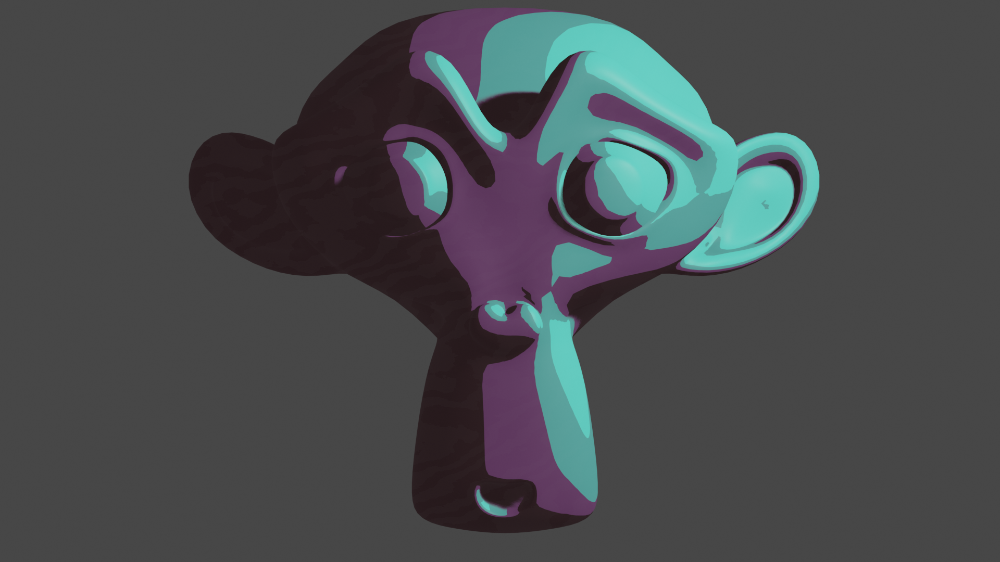
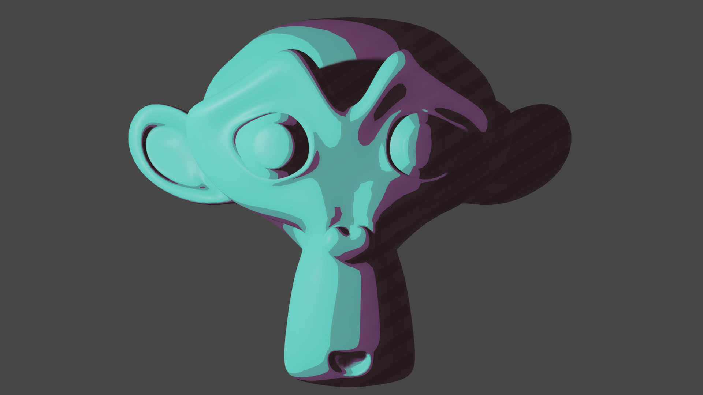
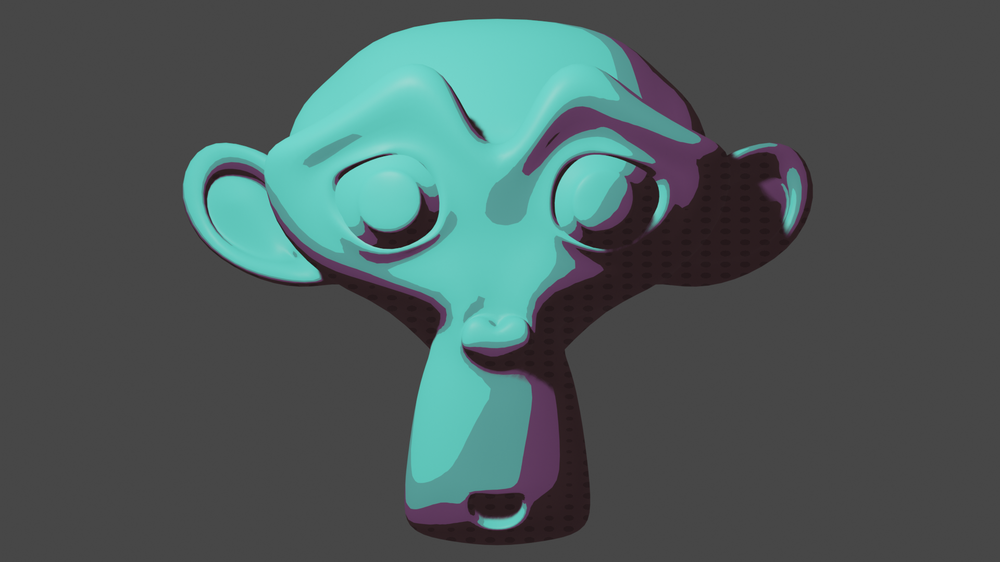

Курс по налаштуванню графіки в блендер
Як зарендерити 3-д модель в мультяшному стилі?
Для початку нам потрібно увімкнути Freestyle, щоб отримати контур для моделей
він знаходиться в вкладці рендер в низу тут можна налаштувати ширину і колір
контору тепер створюємо об'єкт для початку зійде базова голова мавпи
накидуємо на неї модифікатор сабдів після чого налаштуйте 3 точне світло
(це три точки світла заді спереду і фонове) тепер зайдіть в режим шейдера
поставте режим рендеру (необхідно виставити Eevee) тепер скопіюйте
налаштування шейдера з фото, щоб отримати мапінг текстур координати
і вейв текстур виділіть колор-рамп і натисніть ctrl+t
нижня кольорова рампа відповідає за тіні виберіть будь-який колір
і зробіть градієнт. Риски та тіні можна змінити на крапки або що захочете
щоб отримати ноди шейдеру тикайте на різні зображення нище
готово!
стандарт

крива лінія

лінія

крапка
Сайт де можна встановити блендер: тицяй на менеще трошки інформації
з права дають тортики Безплатно! ТАм ТОритикк!!!!!
відео з використанням такої графіки: тицяй на менещебільше інформації
тримай тортик
нащо ти сюди крутиш?
тортик неправда
v3.5.b остані зміни 03.04.2023 14:44 добавив табло з новинами +багфікс з фоновим градієнтом